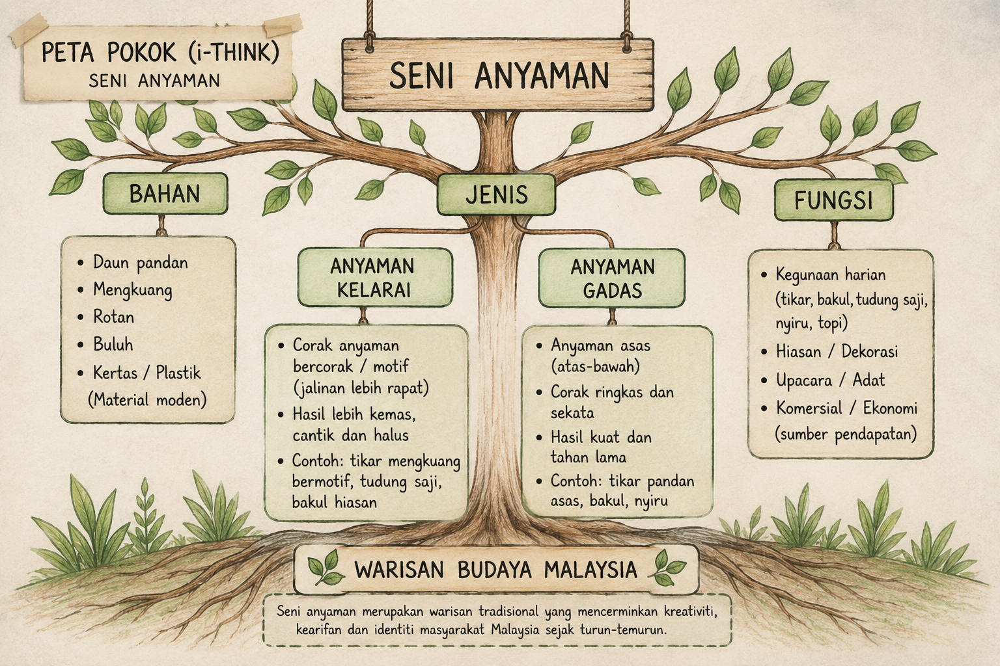
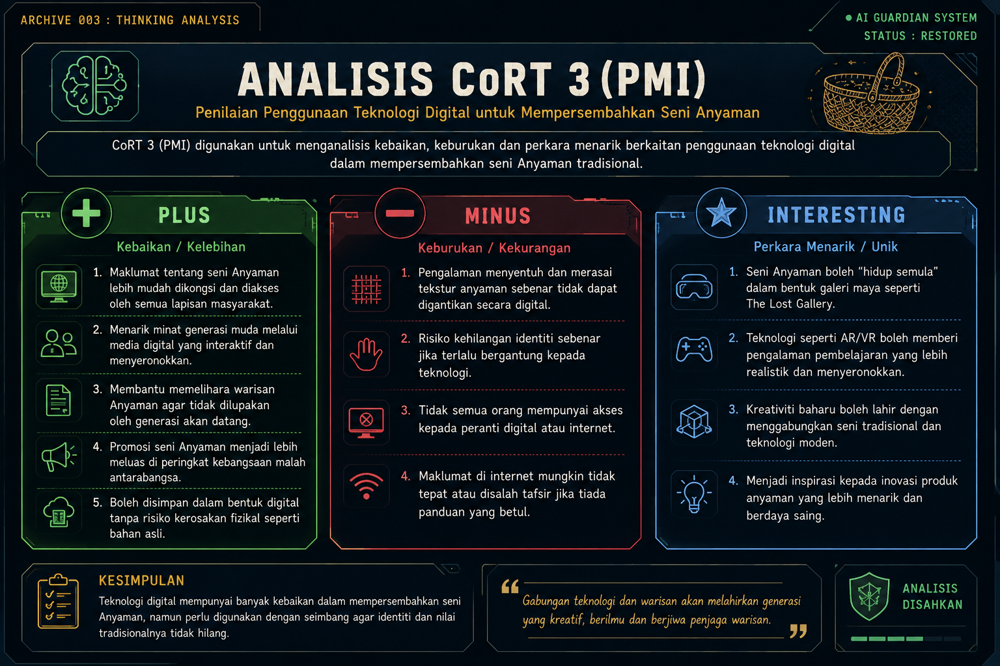
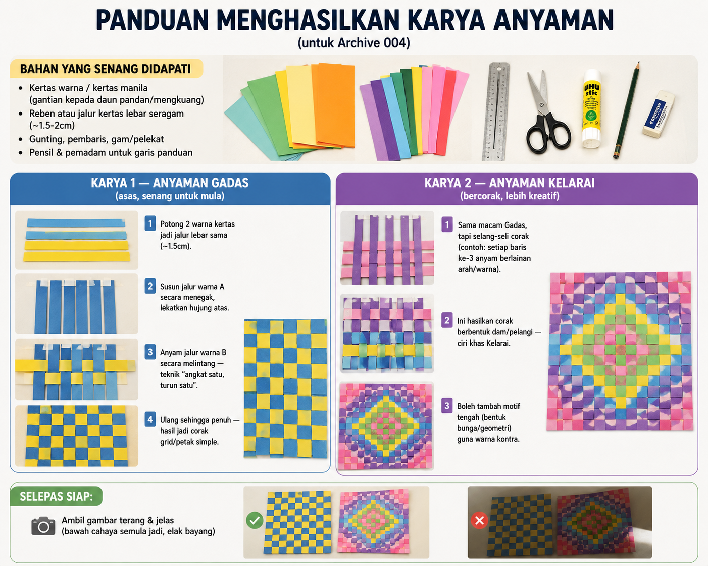
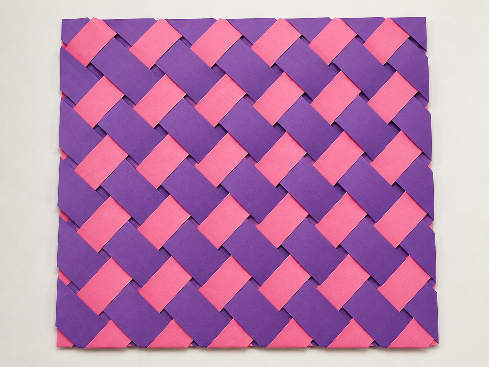
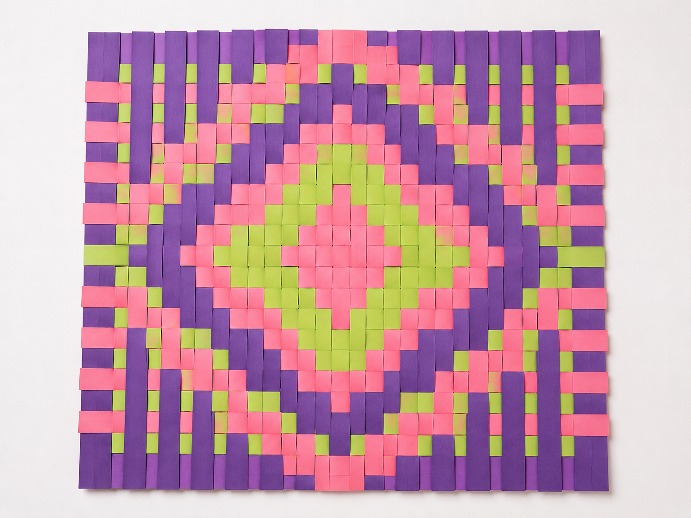
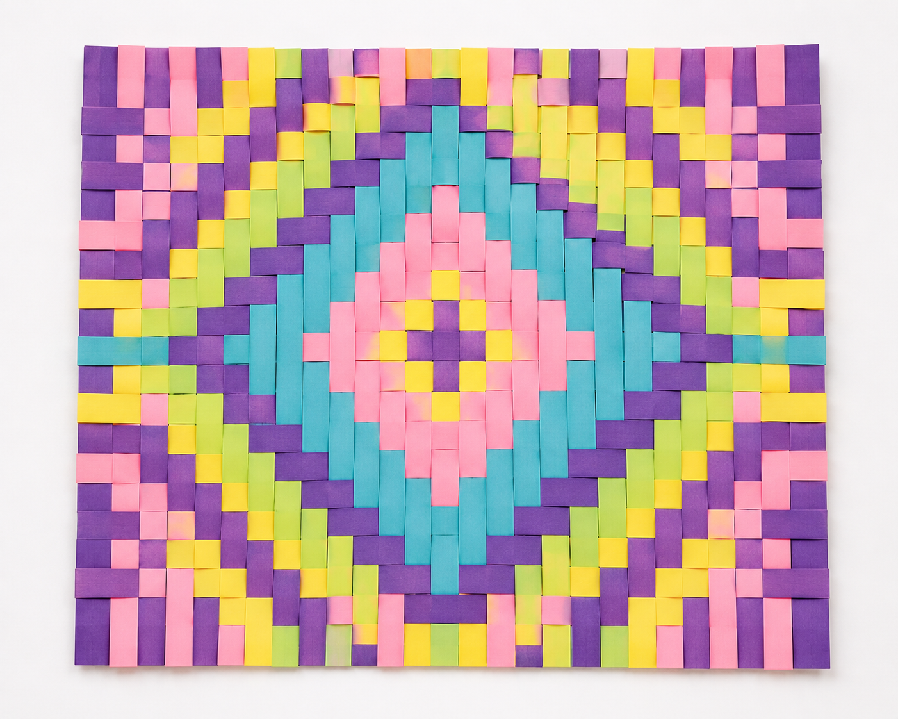

THE LOST
GALLERY
Setiap Misi Memulihkan Secebis Warisan Seni Malaysia.
Taklimat Misi
Pada tahun 2090, berlaku kegagalan Sistem ART‑X (Art Transmission Failure) — satu sistem pemindahan ilmu seni yang gagal berfungsi, menyebabkan rekod warisan seni Anyaman Malaysia tidak lagi boleh diakses. Bakul, tikar, dan tudung saji — hasil tangan penganyam tradisional — kini tinggal serpihan data yang terputus.
Anda dilantik sebagai Penjaga Galeri Terakhir. Anda bukan sedang melawan virus — anda sedang memulihkan ilmu. Lima arkib di bawah telah terputus akibat kegagalan sistem. Setiap arkib hanya boleh dipulihkan selepas anda menyelesaikan satu proses pembelajaran.
- 📖 Cari maklumat tentang warisan yang hilang
- 📝 Buat nota daripada bacaan yang ditemui
- 🧠 Gunakan alat kemahiran berfikir untuk memahami corak warisan
- 🎨 Hasilkan semula karya sebagai bukti pemulihan
- 💭 Rekod refleksi sebagai penjaga galeri
Arkib Ilmu
Bilik ini menyimpan asal-usul seni Anyaman tradisional Malaysia.
Fail Dipulihkan: Asal-Usul Seni Anyaman Malaysia
📜 REKOD DITEMUI: FRAGMEN 001
Sebelum meneruskan misi, Penjaga perlu memahami asal-usul artifak yang cuba dipulihkan. Tonton rakaman arkib berikut untuk mengenali seni Anyaman dan tokoh yang telah berjasa memeliharanya.
Langkah pertama Penjaga Galeri ialah mengumpul semula maklumat asas tentang seni Anyaman, merujuk Dokumen Standard Kurikulum dan Pentaksiran (DSKP) PSV Tahun 4 bagi bidang Mengenal Kraf Tradisional.
Standard Pembelajaran:
4.1.1 Mengenal pasti dan membanding beza bahasa seni visual pada karya kraf tradisional.
4.1.2 Mengaplikasikan bahasa seni visual melalui penerokaan media, teknik dan proses.
4.1.3 Menghasilkan karya kraf tradisional secara kreatif.
4.1.4 Membuat apresiasi terhadap karya sendiri dan rakan menggunakan bahasa seni visual.
Maksud Anyaman: Satu proses menjalin secara silang-menyilang helaian atau jaluran daun (pandan, mengkuang) atau bahan lain seperti rotan dan buluh mengikut teknik tertentu.
- Bahan asas: Daun pandan & mengkuang, di samping rotan, buluh, bertam dan nipah — kebanyakannya tumbuh di kawasan hutan, paya dan pesisir pantai
- Sejarah: Diamalkan sejak berabad lamanya dalam masyarakat Melayu, terutama di Terengganu, Kedah, Perak dan Melaka
- Anyaman Kelarai — bercorak/motif berbentuk dam sebagai ragam hias utama
- Anyaman Gadas — anyaman asas tanpa kelarai, teknik angkat satu turun satu
- Hasil: Bakul, tikar, topi, tudung saji — kebanyakan dua dimensi, sebahagian tiga dimensi
Jawab kuiz ringkas ini untuk membuktikan bahawa anda telah memahami asas seni Anyaman sebelum meneruskan misi ke arkib seterusnya.
1. Apakah maksud anyaman?
2. Antara berikut, yang manakah merupakan bahan tradisional untuk menghasilkan anyaman?
3. Apakah kegunaan anyaman pada zaman dahulu?
4. Mengapakah seni anyaman perlu dipelihara?
5. Antara berikut, yang manakah contoh hasil anyaman?
Bilik Nota Rahsia
Nota yang koyak perlu disusun semula sebelum ilmu boleh diwariskan.
Fail Dipulihkan: Ringkasan Bacaan Penjaga
Tahniah, Penjaga. Fragmen Arkib Pengetahuan berjaya dipulihkan. Namun sistem mengesan data masih tidak lengkap. Untuk memulihkan arkib sepenuhnya, lengkapkan nota dengan tajuk sumber, pengarang, ringkasan ayat sendiri, dan refleksi peribadi.
📖 Nota Bacaan Penjaga
Ringkasan: Anyaman ialah proses menjalin helaian daun pandan atau mengkuang secara silang-menyilang mengikut teknik tertentu. Seni ini telah diamalkan sejak berabad lamanya, terutama di Terengganu, Kedah, Perak dan Melaka. Terdapat dua jenis utama iaitu Anyaman Kelarai yang bercorak dan Anyaman Gadas yang lebih ringkas.
Refleksi: Saya dapati nama "Kelarai" dan "Gadas" sebenarnya merujuk kepada tahap kerumitan corak, bukan jenis bahan — ini mengubah cara saya memahami klasifikasi kraf ini.
Sumber 2: Bahagian Pembangunan Kurikulum — DSKP PSV Tahun 4 (KPM, 2018)
Ringkasan: Dokumen ini menggariskan bahawa murid perlu mengenal pasti bahasa seni visual pada kraf tradisional serta menghasilkan karya secara kreatif. Fokus pembelajaran turut merangkumi apresiasi terhadap hasil kraf sendiri dan rakan.
Refleksi: Ini menunjukkan tugasan bukan sekadar mengenali Anyaman, tetapi juga menghayati proses kreatif di sebaliknya.
📊 Jadual Perbandingan: Anyaman Kelarai vs Gadas
Teknik: Gadas — angkat satu turun satu (asas); Kelarai — jalinan lebih rapat dengan corak berselang-seli
Corak/Motif: Gadas — corak petak ringkas; Kelarai — corak berbentuk dam/ragam hias
Fungsi: Gadas — bakul & tikar asas harian; Kelarai — tudung saji & bakul hiasan bermutu tinggi
"Setiap nota yang dipulihkan menghidupkan semula satu warisan yang hampir hilang."
Makmal Pemikiran
Sistem ART‑X mengunci corak sebenar Anyaman. Hanya pemikiran kritis dapat memecahkannya.
Fail Dipulihkan: Analisis Pemikiran Penjaga
Sistem berjaya memulihkan rekod analisis pemikiran yang digunakan untuk memahami seni Anyaman. Penjaga perlu menggunakan kemahiran berfikir bagi mengelaskan maklumat serta membuat penilaian secara kritis sebelum arkib dapat dipulihkan sepenuhnya.
🌳 Rekod 01 — Peta Pokok (i-Think)

Peta Pokok digunakan untuk mengelaskan seni Anyaman mengikut bahan, jenis, dan fungsi supaya maklumat dapat difahami dengan lebih tersusun dan sistematik.
💡 Rekod 02 — Analisis CoRT 3 (PMI)

Minus: Pengalaman menyentuh dan merasai tekstur anyaman sebenar tidak dapat digantikan secara digital.
Interesting: Warisan Anyaman boleh dipelihara dan dipromosikan melalui galeri maya seperti The Lost Gallery.
"Pemikiran yang kritis membolehkan warisan dipelihara dengan lebih bermakna."
Studio Pemulihan
Satu-satunya cara memulihkan warisan ialah mencipta semula dengan tangan sendiri.
Fail Dipulihkan: Galeri Karya
🛠️ BRIEFING MISI: STUDIO PEMULIHAN
Akses Penjaga telah disahkan. Sebelum tangan kamu menyentuh bahan pemulihan, kuasai dahulu teknik asas yang digunakan sejak turun-temurun. Tonton video latihan ini sebelum memulakan misi.
Hasilkan semula seni Anyaman (Kelarai atau Gadas) mengikut panduan di bawah, lekatkan "kod pemulihan" (kod QR) pada setiap karya yang membawa pengunjung ke penerangan ringkas.

Karya yang dihasilkan:



- Karya 1 — Anyaman Gadas (Asas): Corak petak asas menggunakan teknik "angkat satu, turun satu". Ringkas dan kemas.
- Karya 2 — Anyaman Kelarai (Corak): Corak kelarai berbentuk dam dihasilkan dengan selang-seli warna. Lebih berwarna dan menarik.
- Karya 3 — Anyaman Kelarai (Kreatif): Corak kreatif dengan motif bunga geometri di tengah. Gabungan warna kontra yang menyerlah.
📱 KOD PEMULIHAN — IMBAS UNTUK PENERANGAN LANJUT
Imbas kod QR di atas untuk melihat gambar dan penerangan lanjut bagi ketiga-tiga karya Anyaman Penjaga Galeri.
Jurnal Penjaga
Setiap misi berakhir dengan rekod peribadi seorang penjaga.
Fail Dipulihkan: Log Penjaga Galeri
Bahagian yang paling mencabar sepanjang menyiapkan tugasan ini ialah menghasilkan Peta i-Think dan analisis CoRT 3 di Archive 003. Saya perlu memahami topik Anyaman dengan lebih mendalam sebelum dapat mengelaskan maklumat mengikut bahan, jenis dan fungsi secara tersusun. Pada masa yang sama, saya turut perlu menilai secara kritis kelebihan dan kekurangan penggunaan teknologi digital dalam mempersembahkan warisan tradisional. Cabaran ini mengajar saya bahawa kemahiran berfikir memerlukan kefahaman yang jelas terhadap sesuatu topik dan bukan sekadar mengisi maklumat ke dalam sesuatu peta pemikiran.
Melalui keseluruhan proses menghasilkan tugasan ini, saya menyedari bahawa warisan kraf tradisional seperti Anyaman mempunyai nilai budaya yang sangat tinggi dan perlu terus dipelihara. Saya juga semakin yakin menggunakan pelbagai aplikasi digital untuk membina Objek Pembelajaran Digital yang lebih kreatif dan interaktif. Pengalaman ini menunjukkan kepada saya bahawa kreativiti dan teknologi boleh digabungkan dengan kandungan akademik untuk menghasilkan pembelajaran yang lebih menarik, bermakna dan berkesan kepada murid."
Refleksi Penjaga Galeri — dikaitkan dengan C5 (Pemikiran Kritis), C6 (Kreativiti), dan LD3 (Memanfaatkan Kemudahan Digital).
📚 Rujukan
Bahagian Pembangunan Kurikulum. (2018). Dokumen Standard Kurikulum dan Pentaksiran: Pendidikan Seni Visual Tahun 4. Kementerian Pendidikan Malaysia.
Google NotebookLM. (2026). Anyaman: Seni warisan Malaysia [Video overview dijana AI berdasarkan sumber Kraftangan Malaysia & DSKP KSSR PSV Tahun 4].
Jabatan Warisan Negara. (t.t.). Anyaman. Diakses daripada https://www.heritage.gov.my/en/kraf.html
Kraftangan Malaysia. (t.t.). Adiguru Kraf. Diakses daripada https://kraftangan.gov.my
Kraftangan Malaysia. (t.t.). Hajah Kelsom binti Abdullah — Adiguru Kraf Anyaman. Diakses daripada https://kraftangan.gov.my/info/adiguru-kraf/hajah-kelsom-binti-abdullah
Proses menganyam tikar mengkuang | Tingkatan 3. (2021, September 23). YouTube. https://www.youtube.com/watch?v=GkbiWOiGaVc